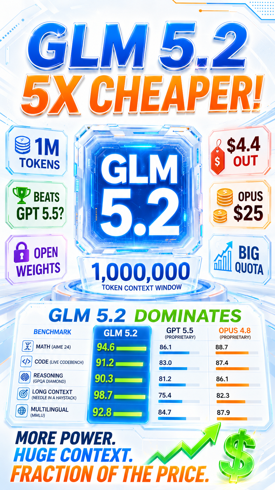

Context Window
1M
tokens — a 5× leap over 5.1
GLM 5.1
200K
GLM 5.2
1,000,000
Frontier Territory
Same League
as the Frontier
GLM 5.2
1M ctx
GPT-5.5
1M ctx
Opus 4.8
1M ctx
Beats GPT-5.5
in every benchmark
≈ Matches Opus 4.8
Open Source • Open Weight
Yours to run
Run It
Yourself
Install GLM 5.2 on your own machine.
Model Size
750B
parameters
⚠️ Needs serious hardware to run locally
Usage Quota
Way More
Headroom
than Codex & Claude
5–6 HR Window
Weekly Window
Hard to Hit
the Limit
GLM 5.2
Rarely capped — keep going
Codex / Claude
Hit limits, back off
Huge Quota
Bigger than any
frontier agent.
The Verdict
Worth a Shot
Always running out of quota on Codex or Claude? Give GLM 5.2 a try.
For more AI news
Subscribe • Like • Follow